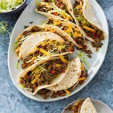

Tacos

Description
Easy taco recipe that you can make anytime.
Ingredients
- 1 lb ground beef
- 2 tbsp taco seasoning
- Desired toppings
- 1/2 cup water
- Tortillas
Steps
- Cook ground beef
- Add taco seasoning and water. Simmer 5 min.
- Spoon meat mixture into tortilla. Top with desired toppings.